authors
maintainers
- ansible
contributors
- marcosdiez : 6 commits
- aliok : 1 commits
- manics : 2 commits
- linuxdynasty : 3 commits
- fabriceb : 1 commits
- jpmens : 10 commits
- verm666 : 6 commits
- j2sol : 9 commits
- mpdehaan : 35 commits
- hacosta : 3 commits
- maetthu : 8 commits
- davidminor : 5 commits
- edwlarkey : 1 commits
- sfromm : 8 commits
- mgedmin : 1 commits
- bradobro : 13 commits
- likwid : 8 commits
- jctanner : 15 commits
- schtibe : 9 commits
- mscherer : 11 commits
- swayf : 2 commits
- jlund : 3 commits
- tyll : 2 commits
- abadger : 4 commits
- bcoca : 11 commits
- vmindru : 6 commits
- gregswift : 9 commits
- ssssam : 1 commits
- lvh : 1 commits
- jimi-c : 40 commits
total issue counts
unknown: 2
feature pull request: 22
docs report: 3
pullrequest: 108
docs pull request: 12
bugfix pull request: 72
feature idea: 13
issue: 80
bug report: 64
issue history
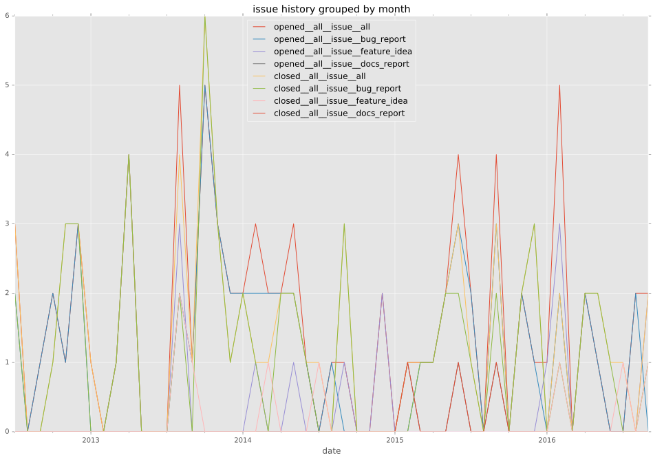
pullrequest history
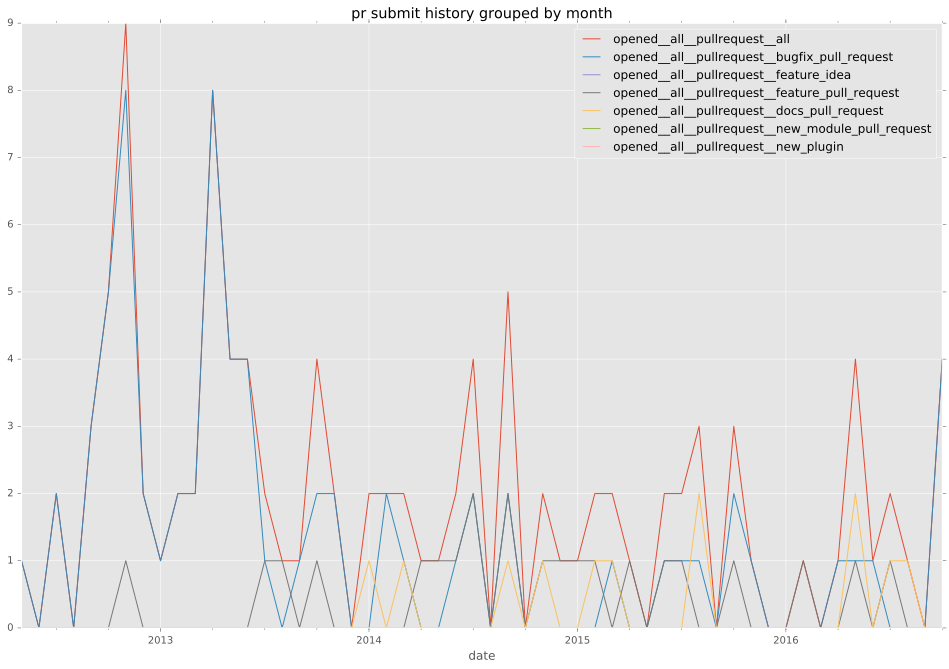
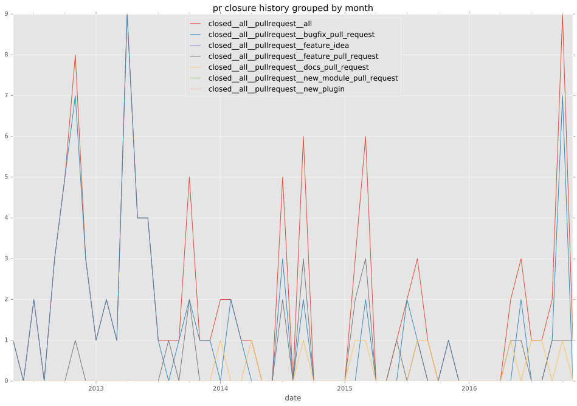
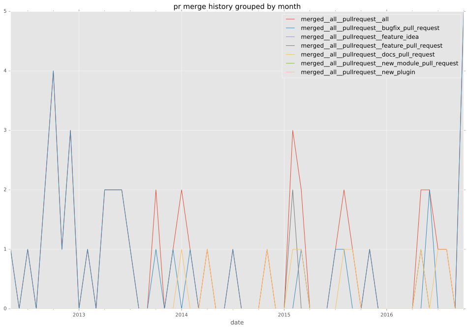
days open by issue type
bugfix pull request
count: 104
std: 14.8470387409
min: 0
max: 125
median: 0.0
mean: 4.20192307692
all
count: 221
std: 99.76544788
min: 0
max: 739
median: 0.0
mean: 29.9004524887
pullrequest
count: 0
std: nan
min: nan
max: nan
median: nan
mean: nan
docs pull request
count: 21
std: 14.7611136501
min: 0
max: 48
median: 1.0
mean: 8.7619047619
docs report
count: 3
std: 2.08166599947
min: 0
max: 4
median: 1.0
mean: 1.66666666667
feature pull request
count: 21
std: 137.268402357
min: 0
max: 459
median: 43.0
mean: 102.714285714
feature idea
count: 8
std: 293.708766103
min: 0
max: 728
median: 37.0
mean: 181.625
issue
count: 0
std: nan
min: nan
max: nan
median: nan
mean: nan
bug report
count: 62
std: 114.551313556
min: 0
max: 739
median: 1.0
mean: 38.1129032258
closures grouped by total days open
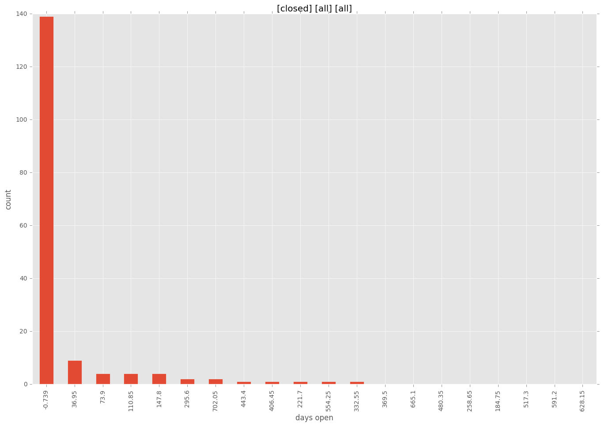
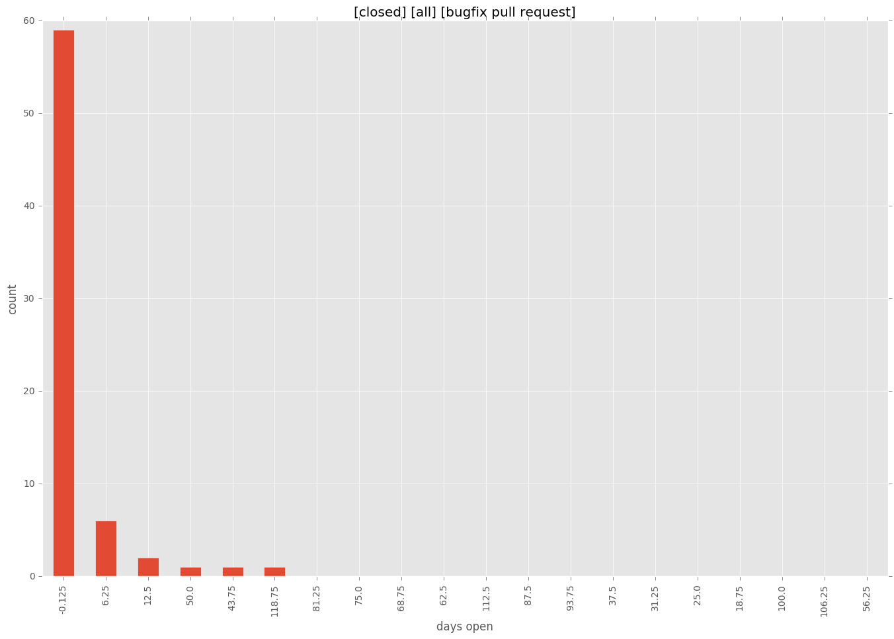
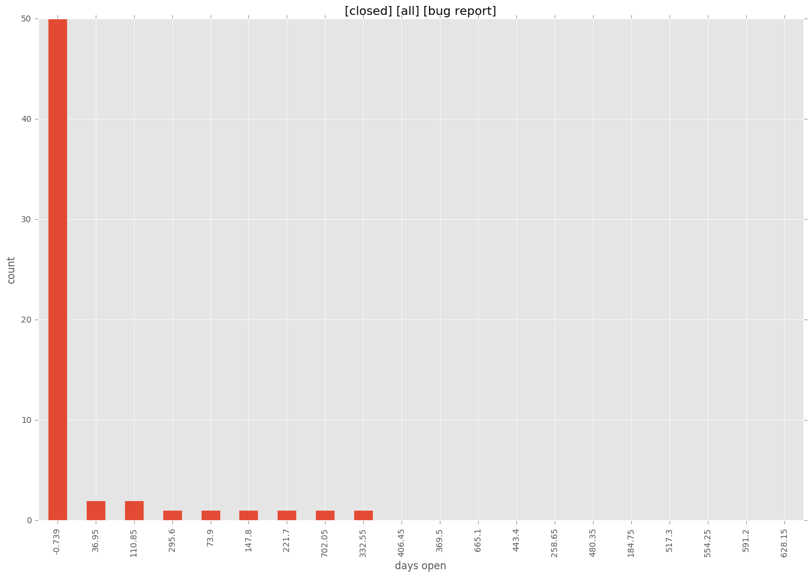
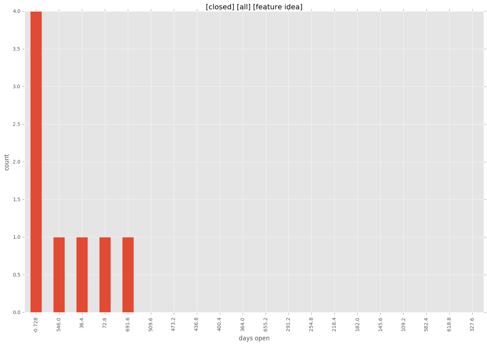
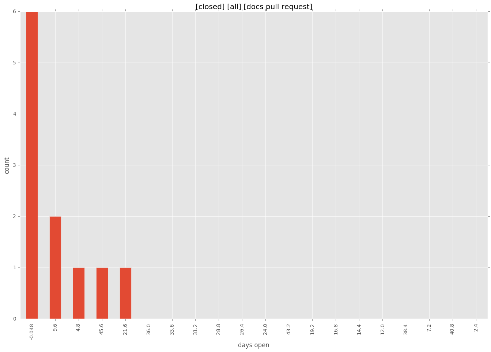
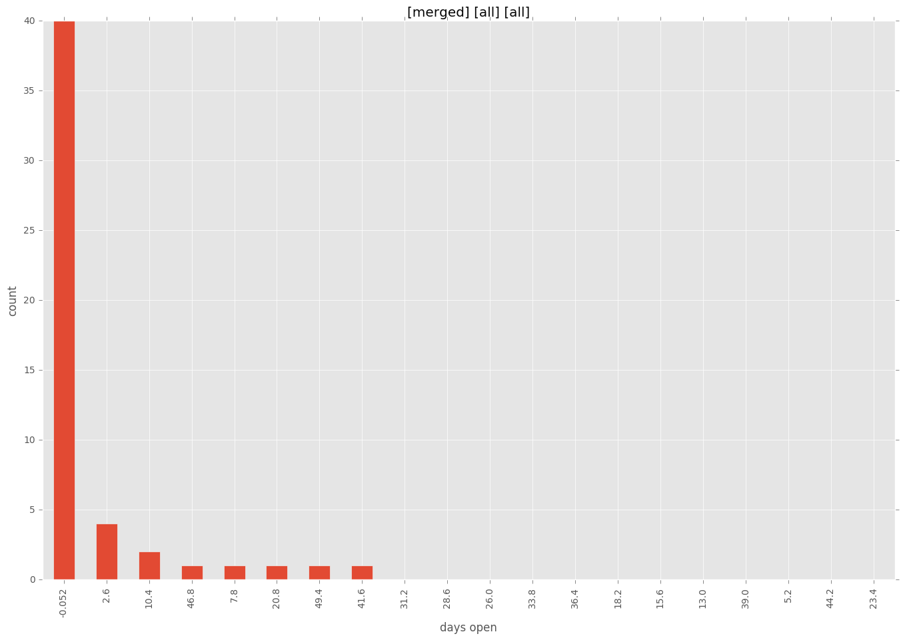
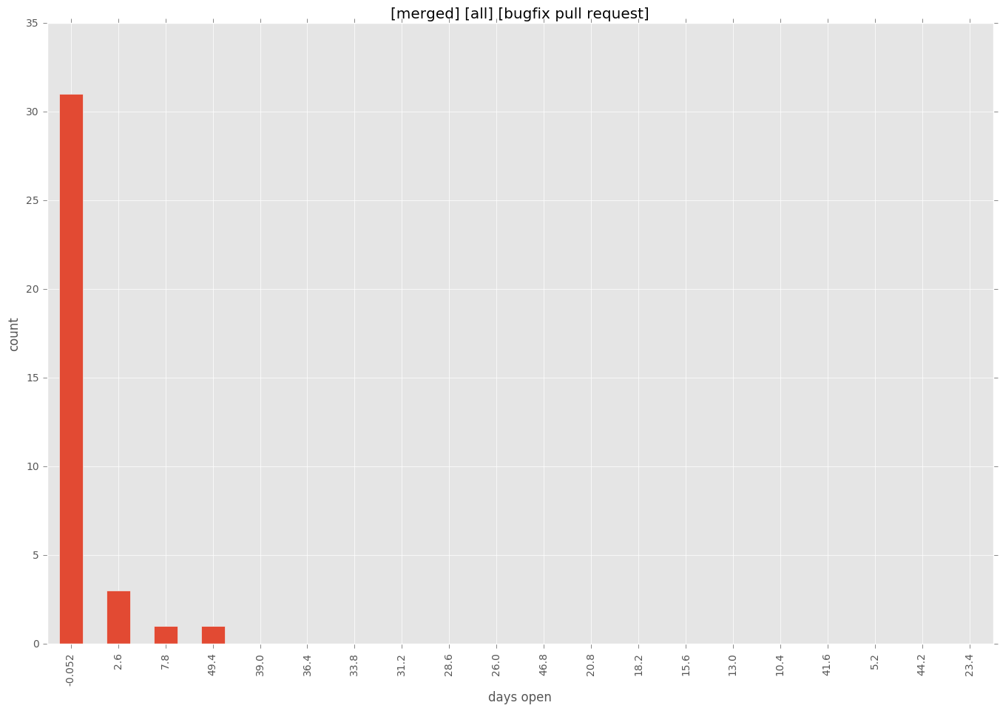
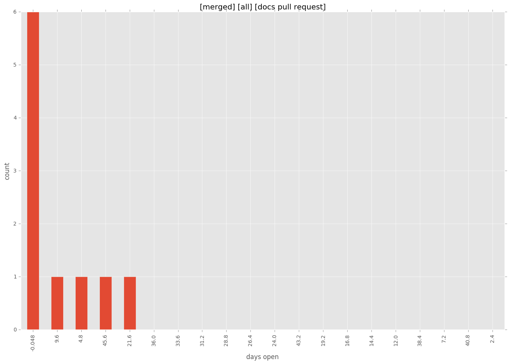